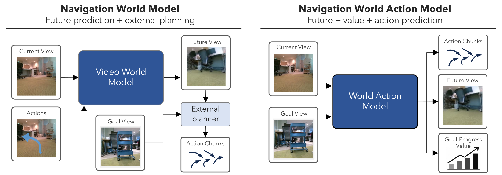
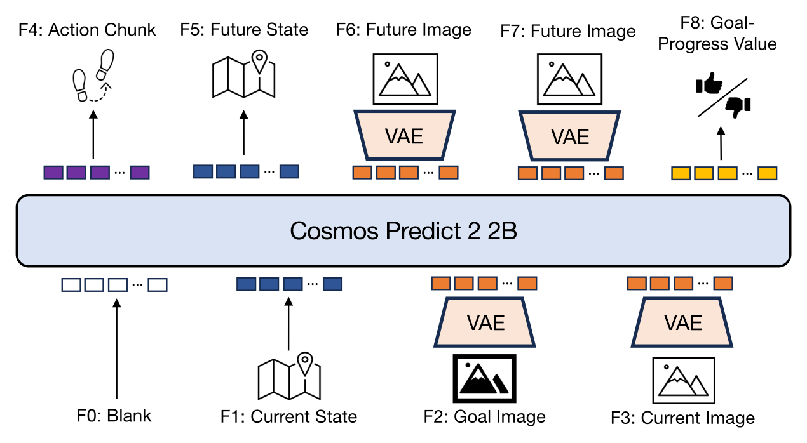
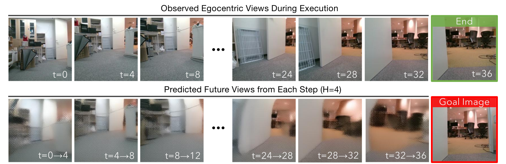
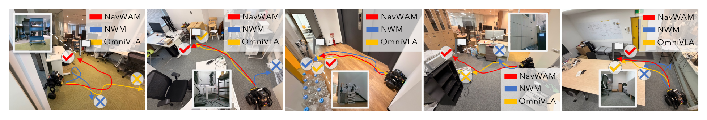
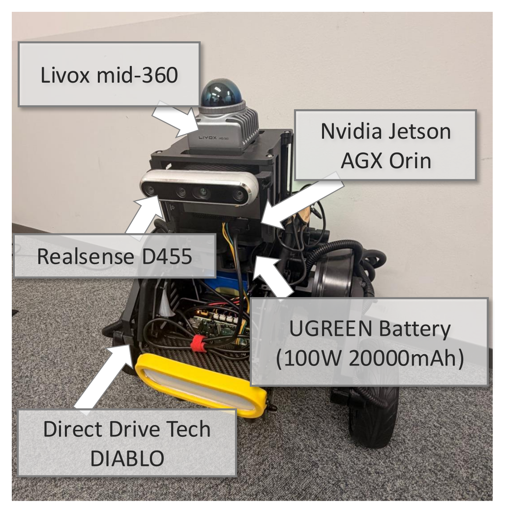

TL;DR: NavWAM turns navigation world-model future prediction into an action-producing policy. It represents future egocentric observations, a goal-progress value, and an executable action chunk in a shared latent sequence, and predicts them jointly in a single diffusion pass — navigating without CEM-style test-time trajectory optimization.

Goal-conditioned visual navigation requires a robot to act under partial observability by anticipating how its motion will change the future egocentric view and whether that change brings it closer to the goal. Navigation world models provide such visual foresight, but they remain prediction modules that require an external planner to convert predicted futures into closed-loop control. We propose the Navigation World Action Model (NavWAM), a diffusion-transformer policy that turns navigation world-model prediction into executable action by representing future observations, goal-progress values, and action chunks in a shared latent sequence. By learning future prediction jointly with the action and value targets that determine closed-loop behavior, NavWAM makes visual foresight directly usable for robot control. We build NavWAM through simulation pretraining and real-robot adaptation, and evaluate it on image-goal navigation against planning-based world models and a representative direct navigation policy. Across offline benchmarks and closed-loop real-robot deployment, NavWAM improves over planning-based world-model baselines while using the default policy mode without CEM-style action search.

NavWAM represents goal-conditioned navigation as denoising a fixed nine-frame latent canvas built on the pretrained Cosmos Predict 2 (2B) video world model. The bottom four frames are observed and condition the denoising process: a blank pad frame required by the causal VAE, the current robot state, a goal frame (the target image in our image-goal setting), and the current egocentric observation. The top five frames are generated as prediction targets: the executable action chunk, the future state, two future egocentric observations, and the goal-progress value. Following the latent-frame principle of Cosmos Policy, non-visual variables (state, action, value) are encoded as latent frames rather than as separate output heads, so a single model jointly predicts visual and non-visual navigation variables.
A single set of weights is trained with three conditioning modes sampled per training sample — a policy mode (50%) that predicts the action chunk, future state, future images, and value; a world-model mode (25%) that additionally conditions on the action; and a value mode (25%) that estimates goal progress. At inference, NavWAM runs in its policy mode: it directly outputs an action chunk, executes it in a receding-horizon loop, and re-queries the model — producing future-view and value predictions as interpretable foresight without any external planner.
On go stanford image-goal navigation, NavWAM replaces NWM-style CEM planning with a single policy query. Without in-domain fine-tuning it already reduces trajectory error over the CEM-based Cosmos Predict 2 and NWM baselines, and a short in-domain fine-tune (w/ FT) yields the best accuracy — all without CEM-style action search.
| Method | ATE ↓ | RPE ↓ |
|---|---|---|
| Cosmos Predict 2 + CEM | 0.455 | 0.109 |
| NWM (CEM) | 0.453 | 0.107 |
| NavWAM | 0.324 | 0.099 |
| NavWAM w/ FT | 0.192 | 0.070 |
Navigation performance on go stanford (lower is better).
Turning a navigation world model into an action-producing policy does not compromise its future prediction. NavWAM preserves visual foresight while predicting actions directly, improving subject consistency (visual-feature similarity between predicted and ground-truth future observations) over NWM. The qualitative example below shows the egocentric views observed during execution alongside the future views predicted at each step, which remain consistent with the subsequent observations.

Future-image prediction alone is not sufficient for navigation, even with CEM over N=120 candidate actions. Adding action and state supervision sharply improves trajectory accuracy, and adding goal-progress value supervision yields the best results. Conversely, removing future-image supervision from the full model (action, state, and value only) also degrades accuracy — so it is the joint formulation, not any single prediction target, that makes foresight usable for control.
| Supervised targets | Inference | ATE ↓ | RPE ↓ | |||||
|---|---|---|---|---|---|---|---|---|
| Img. | Act. | St. | Val. | h=4 | h=8 | h=4 | h=8 | |
| ✓ | planning | 0.326 | 0.569 | 0.133 | 0.135 | |||
| ✓ | ✓ | ✓ | policy | 0.107 | 0.287 | 0.054 | 0.098 | |
| ✓ | ✓ | ✓ | policy | 0.090 | 0.262 | 0.045 | 0.103 | |
| ✓ | ✓ | ✓ | ✓ | policy | 0.076 | 0.192 | 0.037 | 0.070 |
Head ablation of NavWAM on go stanford.
NavWAM also remains competitive with the direct vision-language-action policy OmniVLA on the held-out sit benchmark, attaining lower ATE and slightly higher success rate at both horizons — using a 2B-parameter video backbone, versus OmniVLA's 7B-parameter VLA backbone — while additionally producing future-view and value predictions.
We deploy NavWAM and two baselines on a Diablo mobile robot across 24 closed-loop image-goal episodes in four indoor environments. NavWAM reaches the goal in 19/24 episodes (79.2%), compared with 14/24 (58.3%) for OmniVLA and 4/24 (16.7%) for NWM. Representative rollouts show NavWAM reaching the goal region more consistently, while NWM often drifts and OmniVLA sometimes stops short or follows less direct paths.


Robot platform: a Diablo base with a RealSense D455, a Livox Mid-360, and an NVIDIA Jetson AGX Orin.
Real-robot rollout videos — to be added.
@misc{azuma2026navwam,
title={NavWAM: A Navigation World Action Model for Goal-Conditioned Visual Navigation},
author={Daichi Azuma and Taiki Miyanishi and Koya Sakamoto and Shuhei Kurita and Yaonan Zhu and Petr Khrapchenkov and Motoaki Kawanabe and Yusuke Iwasawa and Yutaka Matsuo},
year={2026},
eprint={},
archivePrefix={arXiv},
primaryClass={cs.RO},
url={},
}